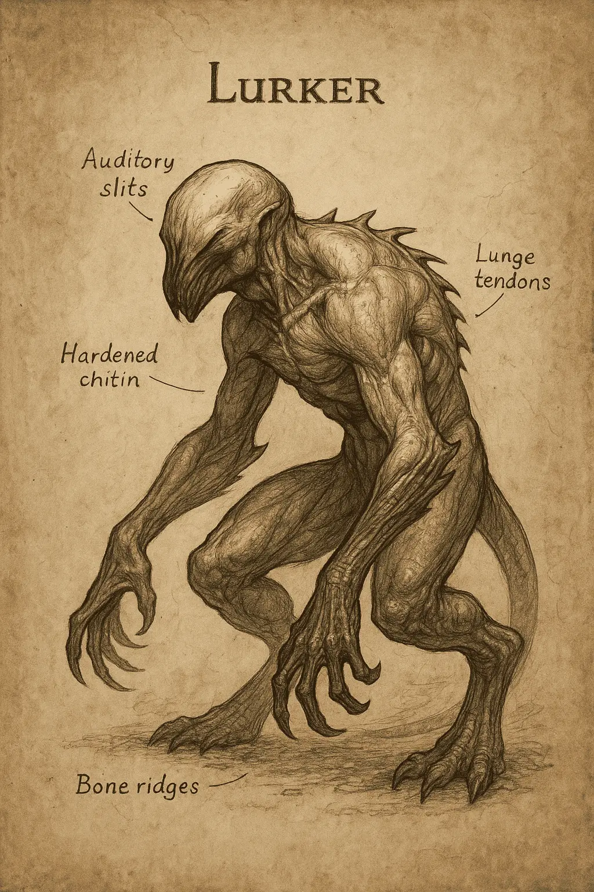

BEA17 - Lurker (Fighter-Class)

Threat Level: 3 – High Threat
Size: Medium
Height: 1.5–1.7m upright
Classification: Beast
Location First Encountered: Ravencross Hills, collapsed mine shaft
Description
Heavily armored exoskeletal creature with jagged natural plating. Ambush predator relying on coordination with scout-class kin. Moves in total silence. When triggered, can burst forth with tremendous force, aiming for the kill with talons, claws, or bite. Responds to light, possibly photosensitive.
Behavior
- Always paired with a scout/observer variant.
- Remains motionless and hidden while scout baits intruders.
- Strikes from shadows once prey is focused or disoriented.
- Shows signs of basic tactical behavior—avoids direct light, attacks from advantageous angles.
Traits
- Thick armor resistant to light slashing or fire.
- Vulnerable at joints and underbelly (especially post-mortem dissection revealed a core behind upper thorax plate).
- Black viscous blood, flammable under alchemical influence.
- Displays short-term patience—can wait several minutes before engaging.
- Sensory systems seem adapted to darkness; light may confuse or delay attack.
Weaknesses
- Easily distracted by motion or sound if light source present.
- Reacts violently to unexpected noise; may trigger premature engagement.
- When separated from its scout or exposed to open light, becomes more erratic and less lethal.
Alchemical & Anatomical Notes
- Core sac contains highly reactive fluids, potentially useful for incendiary mixtures.
- Talon sheaths are rigid and sharp; can be repurposed into puncturing alchemical delivery darts.
- Avoid inhaling vapor from crushed plate post-mortem—observed mild disorientation.
Strategy
Engage as a pair with backup. When confronted, locate scout and use controlled torchlight to isolate the fighter’s attack pattern. Once it commits, exploit blind charge to target soft joints or thorax underside.